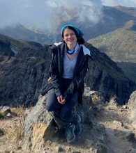

Quiénes somos

Juan David Veloza
Resumen profesional del consultor de Sistemas. Puedes copiar aquí el extracto de LinkedIn.
Ver perfil en LinkedIn
Paula Rocio Veloza
Ingeniera Ambiental con Maestría en Geomática (en curso) y experiencia en proyectos ambientales, adaptación al cambio climático y caracterización de ecosistemas. Experto en Sistemas de Información Geográfica (GIS), con habilidades en cartografía, análisis de datos geoespaciales y manejo de software especializado. Conoce la evaluación de impacto ambiental, planes de manejo y restauración. Destaca por su trabajo en equipo y enfoque en resultados.
Ver perfil en LinkedIn
Carlos Andrés Veloza
Resumen profesional del consultor civil. Puedes copiar aquí el extracto de LinkedIn.
Ver perfil en LinkedIn
Carlos Mauricio Veloza
Resumen profesional de Carlos Mauricio Veloza. Ingeniero Mecánico y consultor en procesos de acreditación educativa. Experiencia en diseño mecánico, mantenimiento industrial, eficiencia energética y acompañamiento en gestión y mejora continua para instituciones y programas académicos. Puedes copiar aquí el extracto de LinkedIn.
Ver perfil en LinkedIn¿Por qué elegirnos?
Somos un equipo multidisciplinario con amplia experiencia en consultoría para los sectores de ingeniería y educación superior. Nos enfocamos en brindar soluciones innovadoras, eficientes y personalizadas, adaptadas a las necesidades de cada cliente.
Ingeniería de Sistemas
- Transformación digital y automatización
- Desarrollo de software a medida
- Optimización de procesos TI
Ingeniería Ambiental
- Gestión ambiental y sostenibilidad
- Estudios de impacto ambiental
- Auditorías y cumplimiento normativo
Ingeniería Civil
- Diseño y supervisión de obras
- Gestión de proyectos de infraestructura
- Consultoría en urbanismo
Ingeniería Mecánica
- Diseño mecánico e innovación
- Mantenimiento industrial
- Eficiencia energética
Procesos de Acreditación en Educación Superior
Te acompañamos en la preparación, gestión y mejora continua para la acreditación institucional y de programas académicos, asegurando el cumplimiento de estándares nacionales e internacionales.
¿Listo para transformar tu organización?
Contáctanos y recibe una asesoría personalizada según tus necesidades.